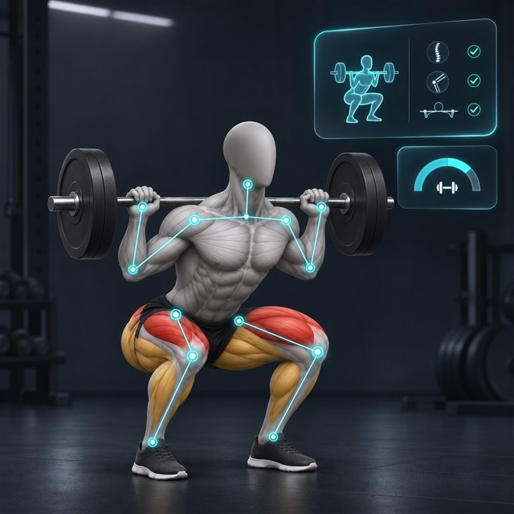

01 · 내 기준
내 목표를 정해요
운동 목표와 가능한 주간 횟수를 입력해요. 키와 체중은 필요할 때 추가할 수 있고, 언제든 수정할 수 있어요.
내 운동 기준
체중 관리주 3회
가능한 횟수로 시작수정 가능
필요한 기능만 짧게 살펴보고, 오늘 할 수 있는 것부터 시작해요.
운동 목표와 가능한 주간 횟수를 입력해요. 키와 체중은 필요할 때 추가할 수 있고, 언제든 수정할 수 있어요.
추천 루틴을 그대로 따라도 되고, 오늘 운동하고 싶은 부위를 직접 선택해도 돼요. 지난 기록을 바탕으로 무게를 제안해요.
운동 화면에서 카메라 자세 체크를 열 수 있어요. 관절 움직임과 반복 횟수를 간단히 살피는 보조 기능이에요.

음식 이름을 검색하거나 메모·사진을 함께 기록해요. 영양 정보와 사진 인식은 참고용으로 확인할 수 있어요.
현미밥 · 닭가슴살 · 샐러드
운동일지에서 날짜별 기록을 보고, 무게와 횟수가 어떻게 달라졌는지 살펴볼 수 있어요.
필요할 때 화면 상단의 ‘이용 가이드’를 눌러 다시 확인할 수 있어요.